附加品
共 981 个附加品 · 第 4/7 页
| 名称 | 稀有度 | 效果 | 所属 |
|---|---|---|---|
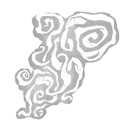 詹纳的最后一口气 Jenner's Last Breath |
传说 | 从asylum病人玛丽·詹纳（又称"焦虑女孩"）身上夺取的强力最后一息。在护士手中，它剧烈颤抖。当所有闪现耗尽后，但在陷入疲惫之前，按下主动能力按钮立即闪现回起始位置。为你的力量补充+1充能。 | 女护士 |
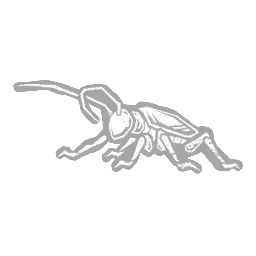 宝石甲虫 Jewel Beetle |
稀有 | 一种美丽而珍贵的昆虫。虽然难以捕捉，却价值不菲。 在剧毒束缚计分事件中给予+100%的额外血点。 与逃生者碰撞后使束缚的剩余持续时间减少-50%。 | 幕后黑手 |
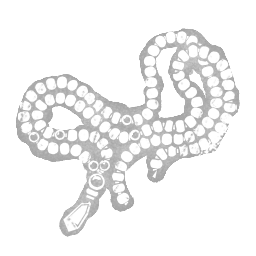 珠宝 Jewellery |
罕见 | 一条由珠子和廉价金属制成的大项链，是朱迪思最喜欢的饰品之一。追踪静止不动的逃生者时，获得以下效果：追踪能力的充能速度提高10%。 | 变形者 |
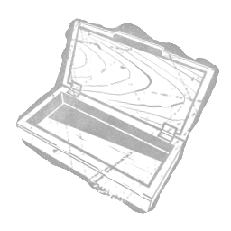 珠宝盒 Jewellery Box |
精贵 | 一个空荡荡的木盒，曾经用来存放虚荣之物。修改“追踪”能力，获得以下效果：追踪能力的充能速度提高30%，追踪范围缩短16米。 | 变形者 |
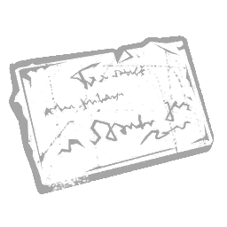 智允的签名 Ji-Woon's Autograph |
罕见 | 那位名为「恶作剧者」的名人留下的亲笔签名。虽然签了上百个，手腕早已酸痛，但知道自己如此抢手仍令人精神振奋。使主事件持续时间增加 +44%。 | 小丑女 |
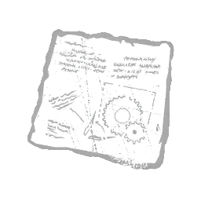 拼图狂魔的批注计划 Jigsaw's Annotated Plan |
精贵 | 一份由竖锯绘制并注释的令人不安却巧妙绝伦的陷阱设计图。可携带的逆向捕兽夹数量增加+1。逆向捕兽夹的死亡计时器增加+10秒。每完成一台发电机，所有激活的逆向捕兽夹死亡计时器减少-10秒。 | 猪女 |
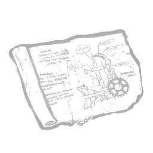 拼图狂魔的草图 Jigsaw's Sketch |
传说 | 一份在纸上详细描绘的令人不安却巧妙绝伦的陷阱设计图。可携带的逆向捕兽夹数量增加+1。逆向捕兽夹的气场将以黄色高亮显示给你。 | 猪女 |
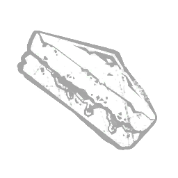 吉尔的三明治 Jill's Sandwich |
传说 | 它被悲惨地压扁，还滴着近期战斗的血迹。尽管如此，它散发着不容错过的美味香气。成功完成后，供应箱的气场会显现 12 秒。 | 复仇女神 |
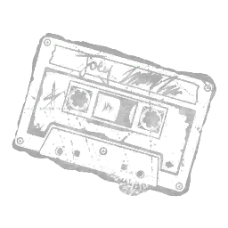 乔伊的混音带 Joey's Mix Tape |
精贵 | 当生活糟心事一堆时，用这盘混音带放松一下——劲爆曲目配上猛烈节拍。逃生者在自我修复前会一直承受流血状态效果，直至完全痊愈。可在恐惧领域内解锁额外音效层。乔伊的混音带可与其他任意混音带附加品组合，解锁多种音效层组合。 | 军团 |
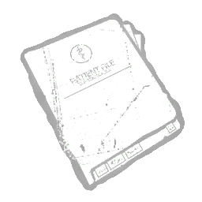 约翰的医疗档案 John's Medical File |
稀有 | 一位癌症患者的病历，让阅读者充满恐惧与鲁莽。你获得以下效果：蹲伏时的移动速度提高+5%。 | 猪女 |
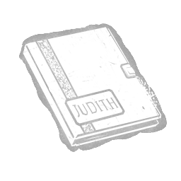 朱迪丝的日记 Judith's Journal |
精贵 | 一本被认定属于朱迪思·M·迈尔斯的日记，大部分页面上被画满了可怕而令人不安的涂鸦。追踪执念对象时，获得以下效果：追踪能力的充能速度提高40%。 | 变形者 |
| 朱迪丝的墓碑 Judith's Tombstone | 活动 | 一块从辛克莱山公墓盗来的大型沉重花岗岩墓碑，属于朱迪思·迈尔斯。修改“恶魔附身”能力，获得以下效果：在“恶魔附身”状态下钩住逃生者会刷新其持续时间。将“恶魔附身”的最大持续时间上限设为40秒。“此处安息着我们挚爱的女儿。” | 变形者 |
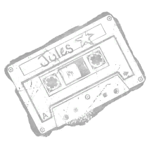 朱莉的混音带 Julie's Mix Tape |
罕见 | 一盘由power ballads主打的黑暗颓废混音带，旋律尽显阴郁。使用过程中因任何方式被眩晕后，野性狂暴立即重新充能。可在恐惧领域内解锁额外音效层。朱莉的混音带可与其他任意混音带附加品组合，解锁多种音效层组合。 | 军团 |
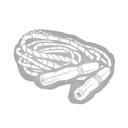 跳绳（梦魔） Jump Rope (Dream Demon) |
精贵 | 一根双人跳绳，长长的绳身上满是多年使用的污渍。使梦境陷阱造成的 -12% 减速状态效果的持续时间延长 +0.5秒，至5秒。 | 梦魇 |
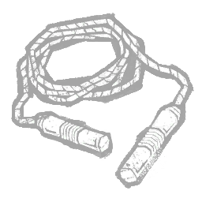 跳绳（欢乐永逝） Jump Rope (Playtime's Over) |
罕见 | 拿来活动活动筋骨不错，用来捆住你的目标也不错。将「利刃与骰子」的持续时间延长至其默认时长的 108%。 | 好人 |
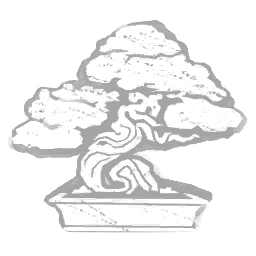 杜松盆景 Juniper Bonsai |
罕见 | 深蓝绿色的观叶盆景树。曾是山冈家族传统的象征。被动相位行走的冷却时间减少-1秒。被动相位行走的持续时间提升+50%。 | 怨灵 |
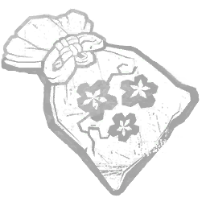 开运护身符 Kaiun Talisman |
罕见 | 助你 luck 缠身的护符。使相位行走的持续时间增加 +1 秒。 | 怨灵 |
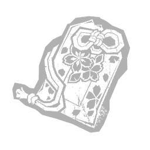 家内安全护符 Kanai-Anzen Talisman |
精贵 | 在一SAN出生时赠予他的护身小饰物，其力量旨在保护家人免受伤害。恶魔冲刺期间，你的移动速度提升 +0.64 米/秒。 | 鬼武者 |
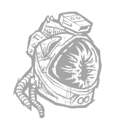 凯恩的头盔 Kane's Helmet |
精贵 | 薄薄的一层玻璃，决定了诺斯特罗莫号船员是遭遇小小不便，还是惨遭毁灭。受到成功尾部攻击击中的逃生者会陷入重伤状态效果，持续70秒。 | 异形 |
| 金木的挎包 Kaneki's Satchel | 罕见 | 对任何努力跟上学习进度的学生来说都是必不可少的装备。使第三次连续赫子跳跃的移动速度提高+4.2米/秒。 | 食尸鬼 |
| 金木的钱包 Kaneki's Wallet | 稀有 | 输给了一个在街上偶然撞到他的陌生男孩。将进行连续赫子跳跃的机会窗口延长+3秒。 | 食尸鬼 |
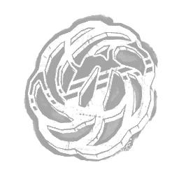 刀镡 Katana Tsuba |
精贵 | 祖传刀刃的护手。为山冈家所打造。使你从相位行走中重新现身时的隐身持续时间延长 +0.2 秒。使你从相位行走中重新现身时的移动速度提高 +5%。 | 怨灵 |
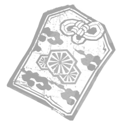 胜守护身符 Katsumori Talisman |
精贵 | 图标 描述 消耗 本附加品已下架（此解锁物品过去已下架，在当前游戏中已不存在。）能带来迅速成功的护身符。提升 Dura | 怨灵 |
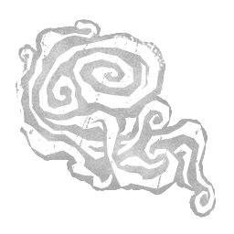 卡瓦纳的最后一口气 Kavanagh's Last Breath |
传说 | 从asylum秩序员哈维·卡瓦纳（又称"胖秩序员"）身上夺取的强力最后一息。在护士手中，它剧烈晃动。当陷入疲惫时，你位置8米范围内的所有逃生者将受到致盲状态效果影响，持续60秒。 | 女护士 |
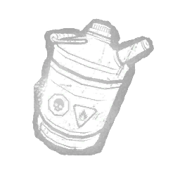 煤油罐 Kerosene Can |
罕见 | 一种稀薄透明的可燃液体，吸入后会使神志麻木。受到药剂影响的逃生者会遭受以下效果：获得失明状态效果，持续 30 秒。 | 小丑 |
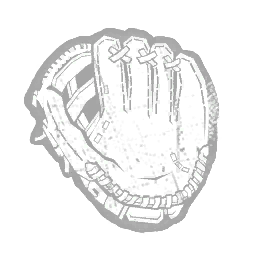 儿童球手套 Kid's Ball Glove |
罕见 | 一个属于殖民者孩子的棒球手套。他关于童年玩接球游戏的记忆被植入。将超频模式的持续时间延长+8%。 | 奇点 |
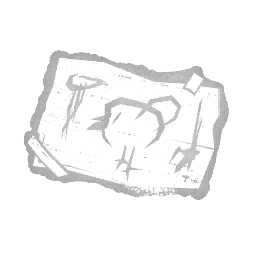 儿童涂鸦 Kid's Drawing |
稀有 | 一幅无署名的画作，显然出自孩童之手。从梦境能力中获得的微睡量增加 +10%。 | 梦魇 |
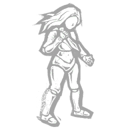 杀手玩偶 Killer Doll |
精贵 | 德古拉的爪牙之一，提醒着所有人他们都是其玩物。修改猛扑攻击，效果如下：收集气味宝珠的冷却时间加成提高+30%。 | 黑暗领主 |
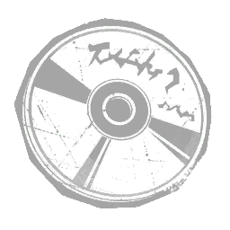 杀戮乐段 Killing Part Chords |
稀有 | 一组智勋始终没能为之写下一首歌的和弦。但那声音 undeniably 洗脑。使 D 至 A 风格段位衰减前的持续时间增加 +50%。 | 小丑女 |
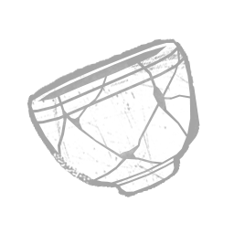 金缮茶杯 Kintsugi Teacup |
活动 | 一只以金粉修补并重新上漆的茶杯。破碎与修补都是这只杯子不可分割的一部分。击破可破坏墙/木板后，立即为山冈的「萦绕」充能 | 怨灵 |
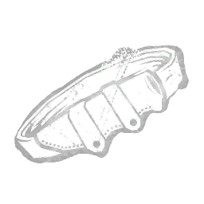 刀带夹 Knife Belt Clip |
精贵 | 一个完美的腰带夹，能让你在侦查时隐蔽地携带刀刃。没人知道你今晚打算做什么。蹲下时，恐怖半径-12米。 | 鬼脸 |
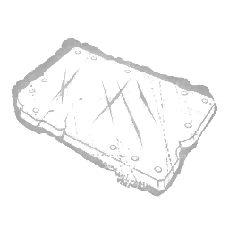 刀痕 Knife Scratches |
罕见 | 链锯机体上布满刮痕，由灼热刀刃造成。被训斥的记忆让持有者充满对失败的恐惧。电锯冲刺期间的移动速度增加+1.5%。能量充能时间增加+10%。 | 食人魔王 |
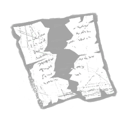 骑士契约 Knight's Contract |
活动 | 将塔尔霍斯与维托里奥的雇佣关系记载下来的原始文件。然而，人类的法律无法对抗自然法则。完成一个守卫指令后，守卫会逗留8秒，若在此期间检测到逃生者，则会触发一次追猎。“我担心他已将我留在这里等死。”——维托里奥·托斯卡诺 | 骑士 |
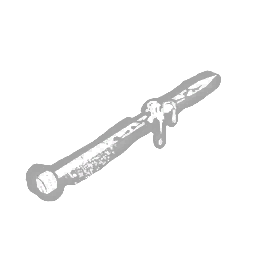 编织针 Knitting Needle |
稀有 | 「你绝对想不到这东西经历过什么——以及谁。」使逃生者拔除自己身上刺入的钩钉所需时间增加20%。 | 杀戮者 |
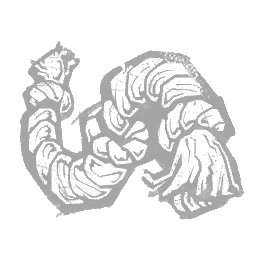 打结的绳索 Knotted Rope |
罕见 | 猎犬的下颚紧紧咬住那个临时玩具，并来回猛甩。成功对处于猎犬掌控下的逃生者发动普通攻击后，攻击冷却时间减少 -2%。 | 猎犬主人 |
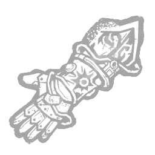 科恩拉德护手 Koenrad's Gauntlet |
稀有 | “当黑暗威胁要吞噬他的羊群时，他引领他们走向光明。”——（科恩拉德见证录，第1章）“神圣之光”的最大控制持续时间增加+25%。受控“神圣之光”的最大速度降低-10%。 | 审判 |
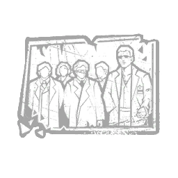 实验室照片 Lab Photo |
活动 | 威斯克既是研究员，也是伞公司的生化武器实验品。 获得在束缚过程中破坏可破坏墙壁与板窗的能力。你无法再使用剧毒束缚翻越板窗。“真正重要的人类不过寥寥数人。其余的都只是些碎谷糠。所以现在，我得把这些糠秕从麦子中挑出来。”——阿尔伯特·威斯克 | 幕后黑手 |
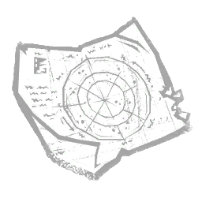 兰伯特的星图 Lambert's Star Map |
罕见 | 对星际旅行至关重要，但在较小的规模上就没那么有用了。遥控火焰炮塔的攻击范围减少2米。 | 异形 |
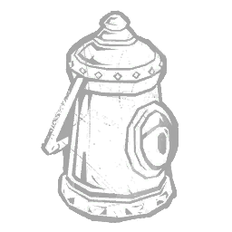 揭示之灯 Lantern of Revealing |
罕见 | 即便能躲过你的攻击，也躲不过你的凝视。被诅咒飞行咒术召唤的飞行实体勉强擦身而过的逃生者，将遭受以下效果：其气场显露3秒。 | 巫妖 |
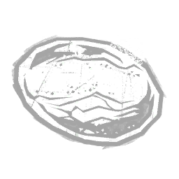 青金石 Lapis Lazuli |
传说 | 一块据说能为持有者带来好运，或从敌人身上夺走好运的石头。传送至窗户后，青金石触发其效果：召唤恶灵8秒。 | 黑暗领主 |
| 大号背包 Large Pack | 活动 | 此附加品未使用，描述未知。使可用使用次数增加2次。 | |
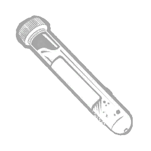 拉里之血 Larry's Blood |
精贵 | 拉里·科顿的血，曾部分复活了他的兄弟弗兰克。使附身锁链的最大距离增加+4米。 | 地牢修女 |
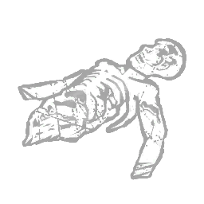 拉里遗骸 Larry's Remains |
精贵 | 拉里·科顿的骨骼残骸，裹着一层厚重而黏稠的血。增加哀叹构装的解脱时间+2秒。“我们要找出干这事的人。”——针头人 | 地牢修女 |
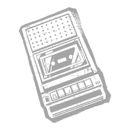 最后的录音 Last Known Recording |
罕见 | “她在失踪前曾研究具体音乐，她最后的尖叫声是磁带上留下的声音。” 对幻觉施加以下效果：逃生者看见自身光环的范围减少 35%。 | 未知者 |
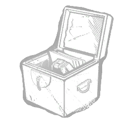 遗愿 Last Will |
罕见 | 一个带缎面内衬的带锁木盒，作为遗嘱的一部分赠出。修改伏击冲刺攻击，效果如下：移动速度提高+5%。蓄力时间增加+10%。 | 猪女 |
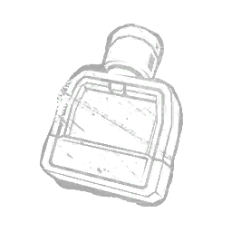 持久香水 Lasting Perfume |
精贵 | 鬼面佩戴的一种浓郁而略带麝香的气味，用来宣告自己的存在。专为他打算加以书写的那些受害者准备。逃生者在钩上的被揭示时间增加3秒。 | 鬼脸 |
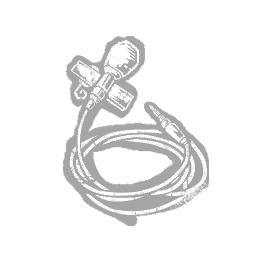 领夹麦克风 Lavalier Microphone |
传说 | 她在附近放着一个领夹式麦克风，以便在承受巨大压力时录下自己内心最深处的感受。光环：消耗最后一个力量标记后 3 秒。使幸存者 6 米范围内的所有储物柜在通过传送进入时打开并猛地关上。 | 深潜者 |
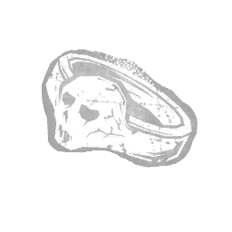 铅戒 Lead Ring |
稀有 | 在一台冰箱里发现的东西。上面刻着一张浮肿恶心的脸。修饰设陷者之惩，产生以下效果：范围增加 +25%。宽度减少 -25%。 | 刽子手 |
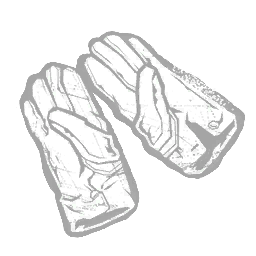 皮手套 Leather Gloves |
罕见 | 冷静而精于算计的阴谋家的手套。它们增添了一份冰冷的专业气息。技能充能时间减少 -8%。 | 幕后黑手 |
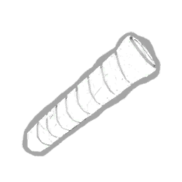 皮革握把 Leather Grip |
稀有 | 一条缠绕在手电筒上的皮革绑带，可提供更好的握持手感。瞄准精度增加 +20%。“太多人死于手心冒汗。” | |
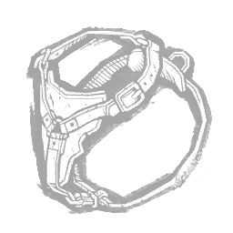 皮革挽具 Leather Harness |
传说 | 能对猎犬的每一个动作进行更精细的控制。每当一台发电机完成时，皮革挽具触发效果持续 30 秒：猎犬的追逐速度提高 +20%。所有发电机完成后，皮革挽具永久生效。 | 猎犬主人 |
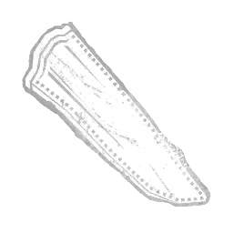 皮刀鞘 Leather Knife Sheath |
精贵 | 一款安静且灵活的刀鞘，便于携带你的刀刃。物品固定到位时移动更加轻松。蹲伏状态下移动速度提升 +10%。 | 鬼脸 |
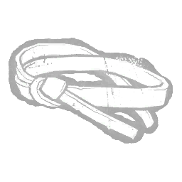 皮环 Leather Loop |
罕见 | 合适的工具配上合适的手，才是成功狩猎的关键。用飞斧成功命中逃生者可获得+2%急速状态效果，持续5秒。 | 女猎手 |
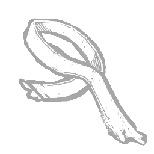 皮条 Leather Strip |
稀有 | 从苦修士制服上撕下的皮革条，可用于割裂裸露的血肉。减少附身锁链攻击的冷却时间-0.15秒。 | 地牢修女 |
| 加长钳口 Lengthened Jaws | 罕见 | 带有长齿的夹钳，比传统捕兽夹能更深地嵌入皮肉。逃脱捕兽夹的逃生者会陷入深度创伤状态。 | 设陷者 |
| 豹纹布 Leopard-Print Fabric | 罕见 | 一小块粉色的豹纹布料。很难判断它原本的用途。在施放审判仪式期间，你获得以下效果：眩晕持续时间减少 -15%。“我是谁并不重要。我是来找你的，詹姆斯。”——玛丽亚 | 刽子手 |
| 麻风地衣 Leprose Lichen | 活动 | 一种在颠倒世界岩石上如尘埃般生长的强力地衣。位于激活传送门 16 米范围内的所有逃生者的气场都会暴露。该效果持续 3 秒。 | 俄摩拉虫 |
| 舔食者之舌 Licker Tongue | 精贵 | 一条粘性且可缠绕的舌头，能轻松缠住任何接触到的物体。变为污染状态的逃生者会承受以下效果：受阻状态效果的持续时间增加 +1 秒至 3 秒。“就像……一场噩梦。”——克莱尔·雷德菲尔德 | 复仇女神 |
| 救生哨 Lifeguard Whistle | 传说 | 一个曾主宰霍金斯公共泳池的生锈金属哨子。你获得以下效果：可用传送门数量增加 +2。“它散发出强大的电磁场：必定接触过颠倒世界。”——霍金斯国家实验室 | 俄摩拉虫 |
| 轻型底盘 Light Chassis | 传说 | 轻便耐用的链锯底盘，配有较短的导板。使链锯更易于操控。在启动巴布的电锯时，8米范围内的光环会向你显现。 | 食人魔王 |
| 荧光棒 Light Wand | 罕见 | 艾什和达拉斯在寻找入侵生物时使用的便携光源。用于照亮较大空间时基本无效。遥控火焰炮塔的临时停机时间增加3秒。 | 异形 |
| 轻质胫甲 Lightweight Greaves | 传说 | 图标描述 费用 此附加品已被移除（此可解锁内容在过去已被移除，在当前的游戏中不再存在。）有时他会穿上更轻的盔甲，以使他移动得更快。 | 骑士 |
| 石灰岩印章 Limestone Seal | 稀有 | 一个由多孔石制成的圆柱形印章，上面展示着带有翼神的仪式场景。使污秽喷吐命中物件造成的感染持续时间增加20秒。 | 瘟疫 |
| 狮牙 Lion Fang | 传说 | 一颗由异国商人出售的牙齿，象征力量与尊贵。血之狂怒的持续时间增加 +10 秒。 | 鬼武者 |
| 狮子徽章 Lion Medallion | 罕见 | 一枚刻有勇敢雄狮图案的古老勋章。它制作于浣熊警局还是一座美术馆的时候。被抓取处于束缚状态的逃生者投掷距离增加 +30%。 | 幕后黑手 |
| 液化血浆 Liquified Gore | 罕见 | 召唤苦修士的产物。无人能说清这原本属于人体的哪个部位。增加哀叹构装的解脱时间+1秒。 | 地牢修女 |
| 带电线缆 Live Wires | 精贵 | 连接在带电电流上的未连接电线，往往会带来令人震惊的惊喜。使逃生者在移除时空滑流后尖叫并中断当前互动。 | 奇点 |
| 活蟋蟀 Lively Crickets | 稀有 | 险些被一名神秘流浪者吞食的昆虫。增加附身锁链的转向速度+10%。 | 地牢修女 |
| 低姿态链条 LoPro Chains | 传说 | 减轻电锯重量的轻型链条，提高了机动性。允许在电锯冲刺期间穿过可破坏墙壁和木板。在触发主要效果后5秒内被电锯击中的健康逃生者只会损失一个健康状态；受伤逃生者则改为受到深度伤口状态效果影响。 | 电锯莽夫 |
| 一缕头发 Lock of Hair | 传说 | 一束用黑色橡皮筋扎起的金色头发。在“恶魔附身”状态下解锁以下能力：按住主动能力键可提前结束“恶魔附身”。这将把剩余持续时间的50%转化为追踪进度。 | 变形者 |
| 苏木染料 Logwood Dye | 罕见 | 煮沸的木灰，用于给捕兽夹染色，使其不那么引人注目。会使捕兽夹适度变暗（α255；R124；G124；B124）。 | 设陷者 |
| 长引信 Long Fuse | 罕见 | 此附加品未使用，描述未知。使爆炸延迟增加1.5秒。 | |
| 长导板 Long Guide Bar | 罕见 | 一根用于长链的坚固铁制替换杆。使电锯加速触发“暴怒”前的阈值增加 +2 秒。 | 食人魔王 |
| 长效电池 Long Life Battery | 精贵 | 一种新型电池，续航时间更长。电池续航时间延长 +6 秒。 | |
| 松动曲柄 Loose Crank | 罕见 | 对那些手中只有一把曲柄的人来说，整个世界看起来就像一个曲柄形状的窟窿。连锁束缚窗口期间你的移动速度增加 +15%。 | 幕后黑手 |
| 松动的螺丝 Loose Screw | 精贵 | 一阵令人毛骨悚然的嘎嘎声从无人机中传出，它看起来随时都可能掉落，分散逃生者对复杂任务的注意力。被爪夹陷阱夹住的逃生者会受到疲惫状态效果影响，持续6秒。 | 骷髅商人 |
| 战利品袋 Loot Bag | 传说 | 打开袋子，看看里面装了什么宝贝。当逃生者被嵌有消防斧时，遭受以下效果：阻挡其出口闸门前 12 米内的通道。 | 机械人偶 |
| 洛伦莎的遗骸 Lorenza's Remains | 传说 | “即使是她的宠物鸟，也会沦为克拉苏嗜血欲望的牺牲品。”受到吸血影响的逃生者还会遭受以下效果：I级：致盲状态。II级：-4%减速状态。 | 浮屠鬼 |
| 遗忘回忆之书 Lost Memories Book | 传说 | 一本讲述寂静岭及周边地区历史与传说的书。设陷者之惩的命中攻击会触发以下效果：使被命中的逃生者陷入遗忘状态，持续80秒。“他们称此地为‘寂静之灵的所在地’。” | 刽子手 |
| 低电流灯丝 Low Amp Filament | 罕见 | 一种专为延长手电筒电池寿命而设计的灯丝灯泡。电池消耗率降低 -24%。 | |
| 低回弹链条 Low Kickback Chains | 精贵 | 一种专用链条，可降低反弹的可能性。电锯冲刺期间撞击障碍物后的冷却时间减少15%。 | 电锯莽夫 |
| 低功耗模式 Low-Power Mode | 罕见 | 通过间歇性开关非关键组件，无人机可以保持更长的运行时间。无人机的扫描线旋转速度降低-100%。 | 骷髅商人 |
| 倒霉老鼠 Luckless Mouse | 稀有 | “猫鼠游戏总能让人热血沸腾。”修改俯冲飞行并赋予以下效果：充能上限增加 +2 充能。 | 浮屠鬼 |
| 幸运刀片 Lucky Blade | 罕见 | 智勋拥有的第一把飞刀。父亲买下它，指望他能常在自家餐厅的熟客面前献上表演。每第八次利刃命中时，随机获得一项加成：投掷速度 +5%，持续 5 秒。获得 +3% 急速状态效果，持续 6 秒。额外获得 1 点风格点数。 | 小丑女 |
| 玛德琳的手套 Madeleine's Glove | 罕见 | 一双曾属于双子的母亲的手套。在绝望的时刻，它曾被捂在维克多嘴上，防止他发出一点声响。维克多的尖啸范围增加+4米。 | 双胞胎 |
| 玛德琳的围巾 Madeleine's Scarf | 精贵 | 玛德琳死前不久穿过的一块布料。双胞胎将它留作纪念。控制维克多时，你的移动速度提升 +0.3 米/秒。「……兹此记录为对更伟大的善与铲除邪恶的贡献。」——《玛德琳·德赛斯之死调查》 | 双胞胎 |
| 真子的手套 Mado's Glove | 精贵 | 一只喰种搜查官佩戴的手套。受到赫子标记影响的逃生者，在标记被移除后经历以下效果：使其陷入疲惫状态效果，持续15秒。 | 食尸鬼 |
| 魔法票券 Magical Ticket | 罕见 | 一件曾用于在德古拉城堡间传送的奇异神器。修改传送能力，效果如下：传送速度提高+10%。 | 黑暗领主 |
| 镁粉 Magnesium Powder | 罕见 | 此附加品未被使用。未知描述。爆炸半径增加 +2.5 米。 | |
| 磁化镣铐 Magnetised Manacles | 罕见 | “那些不躲藏的人将被深锁于地下，远离星辰的指引之光。”——《格哈特的幻象》第六章：将钩住状态最少的逃生者放逐时获得 +1 枚印记，最多 5 枚印记。每枚印记使狂热激活时的持续时间提高 +10%。 | 审判 |
| 少女徽章 Maiden Medallion | 精贵 | 一枚刻有美丽少女图案的勋章。它的用途多年来无人知晓。逃生者达到深度感染时，会遭受失明状态效果 60 秒。 | 幕后黑手 |
| 临时包裹 Makeshift Wrap | 稀有 | 一副由厚厚的熟制兽皮制成、刮擦磨损的护腕。你不再会被自己的捕兽夹夹住，捕兽夹会自动解除。 | 设陷者 |
| 马辛克的颅骨 Malthinker's Skull | 罕见 | 那些给公社带来负面情绪的人总会神秘地人间蒸发，他们的遗骸从未被找到……直到 dredge（德雷奇）将他们挖了出来。使幸存者受伤期间夜幕槽的充能速率每秒提升 +25%。 | 深潜者 |
| 玛娜草辫 Manna Grass Braid | 罕见 | 一圈用玛娜草编成的环形装饰辫。这个关于失去的小家伙的回忆让猎人充满愤怒与专注。飞斧的蓄力时间减少-8%。 | 女猎手 |
| 人体模型脚 Mannequin Foot | 精贵 | 一个人偶光滑的灰色脚掌，被粗暴地从腿上撕下。修饰折磨轨迹，产生以下效果：逃生者接触后陷入疲惫状态，持续10秒。 | 刽子手 |
| 领域地图 Map of the Realm | 稀有 | 这些独特的皮革地图来之不易，但若无法购得，便可强取。巡逻阶段期间守卫的视野范围增加2米。 | 骑士 |
| 枫木骑士 Maple Knight | 稀有 | 一枚枫木制成的白色骑士棋子。这份来自老人的礼物唤起了遥远的回忆，并赋予医生毁灭性的专注力。赋予其透视冲击疗法攻击影响范围的能力。 | 医生 |
| 信徒之印 Mark of the Adherent | 罕见 | “骄傲而永久地佩戴你的信仰。让它提醒他人，祂始终在旁。”——（论异端之二，第1章）未处于“狂热”状态时，“神圣之光”的半径增大+10%。 | 审判 |
| 标记地图 Marked Map | 罕见 | 佛罗里达州北罗斯维尔的标注地图。每个“X”都代表一名鬼面的受害者。标注出你的目标，即可在街头潜行而不被察觉。杀戮欲望持续时间延长 +2 秒。 | 鬼脸 |
| 船用尖锥 Marlinspike | 传说 | 既能解开绳索，也能造成严重的人身伤害。当猎犬抓住一名逃生者时，其 20 米范围内的所有逃生者都会受到猎犬感知效果影响。索针不会影响被抓住的逃生者。 | 猎犬主人 |
| 执法官徽章 Marshal's Badge | 罕见 | 一枚银质徽章，取自亚利桑那领地一名法警的尸体，此人曾干涉赫尔郡帮派的悬赏。瞄准时恐惧范围减少4米。“做好祈祷吧，正午你就会被吊死。”——凯勒布·奎因 | 死神之枪 |
| 马文之血 Marvin's Blood | 罕见 | 浣熊市警官的污染血液。使用触手攻击命中逃生者后，变异速率的获得量增加 +0.5 点。“你只需要知道，如果不小心，这个地方会让你尸骨无存。”——马文·布拉纳 | 复仇女神 |
| 火柴盒 Matchbox | 活动 | 一个装有各种不匹配纽扣的火柴盒。作为某个可怕之处的提醒。在整个对局中将你的移动速度提升至4.4米/秒，并将你的力量限制为仅1次闪烁。此效果无法被其他附加品改变。 | 女护士 |
| 马蒂亚斯的婴儿鞋 Matias' Baby Shoes | 传说 | 一件令卡米娜悲伤的纪念品，提醒她马蒂亚斯永远与她同在，默默守望。距离你5米内闲置的厄运乌鸦气场向你显示3秒。“很快再见，马蒂亚斯。”——卡米娜·莫拉 | 艺术家 |
| 医用剪刀 Medical Scissors | 罕见 | 专为轻松剪开纺织品而设计的剪刀。治疗速度提高 +10%。 | |
| 中号引信 Medium Fuse | 稀有 | 此附加品未被使用。未知描述。爆炸延迟增加 +0.75 秒。 | |
| 美杜莎之发 Medusa's Hair | 传说 | 一件来自德古拉最古老且最可怕的爪牙之一的蛇形纪念品。使你的传送目的地8米范围内的所有逃生者受到以下效果影响：受到-8%减速状态效果，持续4秒。 | 黑暗领主 |
| 悠扬谋杀 Melodious Murder | 精贵 | 一段受害者被利刃剖开时发出的清脆尖叫声音频。智勋把这声音融进了自己最受欢迎的曲目之一。使在柜子处的换弹速度 +25%。 | 小丑女 |
| 纪念刀片 Memento Blades | 稀有 | 因过度使用而生锈的血腥匕首。智云早期作案时使用过，在他心中占有重要地位。瞄准飞刀时显示准星。 | 小丑女 |
| 纪念花 Memorial Flower | 稀有 | 一朵从墓碑上拾起、部分褪色并干枯的粉色飞燕草。修改追踪模式，效果如下：将你的移动速度提升 +0.2 米/秒，至 4.4 米/秒。 | 变形者 |
| 金属勺 Metal Spoon | 稀有 | 一把暗淡、部分生锈且带有污渍的金属勺子。从202室的病人“坏人”身上没收。被特殊攻击击中的逃生者，在接下来的60秒内其痛苦呻吟的音量增加+50%。 | 女护士 |
| 缪斯的内脏 Mews' Guts | 罕见 | 一位不幸受害者美味的内脏。可使未命中的撕裂攻击的攻击冷却时间减少 -11%。可用传送门数量 +1。 | 俄摩拉虫 |
| 中世纪收音机 Mid-Century Radio | 稀有 | "它一直静静摆在克雷尔的餐厅里，直到屠杀即将开始。" 使用破界时，解锁你读取光环的潜力：距离超过32米的逃生者会被揭示其光环——祖父钟。 | 先驱者 |
| 米哈伊尔之眼 Mikhail's Eye | 罕见 | 虽然米哈伊尔已所剩无几，但他的左眼球在夺走他生命的爆炸中幸存下来。它仍然是僵尸的美味佳肴。使僵尸的移动速度提高 +0.35 米/秒。 | 复仇女神 |
| 乳白玻璃 Milky Glass | 传说 | 图标 描述 代价 此附加品已退役（此解锁物在过去已退役，在当前游戏中不再存在。）“这块不透明的玻璃片发出沉闷的振动声。” | |
| 薄荷抹布 Mint Rag | 活动 | 一小块从丽莎·舍伍德失踪当天所穿裙子上撕下的棉布。其中封存的生之精华激发了女巫力量的巨大潜力。按下主动能力按钮，可传送至环境中任意未触发的幻影陷阱。薄荷碎布拥有 10 秒冷却时间。 | 女巫 |
| 镜子碎片 Mirror Shard | 精贵 | 一块又大又锋利的碎镜片。修改屠杀之击，效果如下：将屠杀之击的基础持续时间增加 +0.25 秒。将屠杀之击的充能速度降低 -25%。 | 变形者 |
| 镜子碎片（无处不在的邪恶） Mirror Shards (Omnipresent Evil) | 精贵 | 一件惹来的麻烦远不止厄运的武器。自行拔出鱼钩尖刺后，逃生者陷入破损状态效果，持续 40 秒。 | 杀戮者 |
| 镜子碎片（欢乐永逝） Mirror Shards (Playtime's Over) | 传说 | 一堆映照着光与影的破碎镜片，让本就辨不清方向的人愈发迷离。获得看见逃生者周围「幻象足音」的能力。 | 好人 |
| 造物主之镜 Mirror of the Creators | 活动 | “他们又对它说：拿起这面镜子，让他们看清自身行径的错误。”——《蛮族卷之一》第 6 章 施放的神圣之光遇到前 2 个本会穿过的障碍物时会发生反射。反射时，会停顿 0.4 秒后再进行下一次反射。 | 审判 |
| 恶作剧清单 Mischief List | 稀有 | 一份恶作剧任务清单，留作更光明日子的纪念。使野性狂暴的持续时间延长+1秒。 | 军团 |
| 丢失的开瓶器 Missing Corkscrew | 传说 | 当你需要它时，它似乎总是缺失。当逃生者被钩状尖刺刺中时，他们会散发32米恐惧范围。钩状尖刺被移除。用钩状尖刺刺中逃生者时获得不可侦测状态效果。在逃生者不再被刺中后，此效果持续13秒。 | 杀戮者 |
| 雾之日，审判残迹 Misty Day, Remains of Judgement | 精贵 | 一幅画作：一位威压慑众者，头顶顶着钢铁金字塔。背景中关押着受害者。设陷者之惩的命中攻击会触发以下效果：使光环显形8秒。 | 刽子手 |
| 改装弹药带 Modified Ammo Belt | 稀有 | 凯勒布为他的特制武器改造的旧弹药带。仍残留着亚利桑那领地沙漠的细红沙土。使“救赎者”的装填时间缩短0.25秒。 | 死神之枪 |
| 月石项链 Moonstone Necklace | 罕见 | 一条白天看似普通的项链，但其力量在黑暗中苏醒。修改吸血鬼形态和狼形态，效果如下：恐惧范围减少8米。 | 黑暗领主 |
| 臼与杵 Mortar and Pestle | 稀有 | 与外界和现代医学隔绝，斯坦珀的信徒起初只能就地取材，依靠这座岛屿上的植物生存。你从残影中现身时，面朝的是传送发生那一瞬间你的朝向，而非你放置残影时的朝向。 | 深潜者 |
| 母亲的梳子 Mother's Comb | 精贵 | 录像带中贞子母亲用过的梳子。当贞子专注于它时，她的心灵能力得到增强。将电视机的气场高亮为黄色。使被关闭的电视机触发一次响亮的噪音提示。 | 般若 |
| 母亲的眼镜 Mother's Glasses | 精贵 | 一副属于慈母的眼镜，她因慢性疾病而饱受折磨。幽灵在相位行走时，进入躯壳周围 2 米范围内的逃生者会触发杀手直觉 | 怨灵 |
| 母亲的镜子 Mother's Mirror | 稀有 | 来自贞子母亲家的一面镜子。提醒着贞子失去的一切。使你在“显现”后间歇性隐身状态的持续时间增加2秒。 | 般若 |
| 母女戒 Mother-Daughter Ring | 活动 | 一枚刻有「给我亲爱的女儿」的银戒指。在相位行走期间，你的移动速度提升 +25%。刮痕痕迹 相位行走 | 怨灵 |
| 发霉电极 Mouldy Electrode | 稀有 | 一根发霉的电极，但仍能传导微弱的电流。使冲击疗法攻击的影响范围扩大+2米。 | 医生 |
| 蜕下的皮 Moulted Skin | 精贵 | 异形在诺斯特罗莫号上快速成长，多次蜕皮。它蜕下的皮不断提醒着它的存在。部署遥控火焰炮塔后，陷入疲惫状态效果，持续30秒。 | 异形 |
| 泥泞运动会帽 Muddy Sports Day Cap | 罕见 | 沾着泥巴的运动帽，上面印着高中校徽。内侧缝有写着"Rin"的名牌。在相位行走期间，你的移动速度提升+10%。 | 怨灵 |
| 多用途小斧 Multipurpose Hatchet | 精贵 | 对破坏和修理同样有用。被成功尾部猛击击中的逃生者会陷入出血状态效果，直至完全治疗。 | 异形 |
| 壁画草图 Mural Sketch | 罕见 | 从笔记本上撕下的“军团”壁画草图。使连环野性撕击获得的可叠加移动速度加成由+0.08米/秒提升至+0.32米/秒，最高可达+1.28米/秒。 | 军团 |
| 蘑菇配方 Mushroom Formula | 传说 | “翻涌的雾气丝缕攫住四周环境，蔓延得越来越远。”可改装雾化器，获得以下效果：雾云最大体积+2米。 | |
| 神秘药剂 Mysterious Elixir | 传说 | 一种由迷雾本身塑造的液体。虽然与她饮下的药剂相似，但似乎有细微的改动。修改“吐溢”技能，附加以下效果：击中窗户、水蛭腺体会使其变为被标记状态。此效果可同时影响多个物体。以任何方式翻越被标记的窗户会触发以下效果：将其阻挡10秒并移除其标记。 | 浮屠鬼 |
| NE-a寄生体 NE-a Parasite | 传说 | 用于开发复仇邪神T型的一种寄生虫，能够劫持宿主的脑部。逃生者被污染后获得浑然不觉状态效果，持续60秒，或直到他们使用疫苗治愈自己。 | 复仇女神 |
| 南希的杰作 Nancy's Masterpiece | 精贵 | 一幅由南希·霍尔布鲁克在巴德姆绘制的角色画作，被珍藏为宝贵回忆。每当逃生者被梦境能力击中时，梦境投射的冷却时间减少 -10%。 | 梦魇 |
| 南希的素描 Nancy's Sketch | 罕见 | 一幅用炭笔绘制的粗犷大胆的素描，署名南希·H。睡眠免疫的持续时间减少 -20%。 | 梦魇 |
| 纳米机器凝胶 Nanomachine Gel | 精贵 | 一种能极快愈合伤口的凝胶。然而，其中的机器也有被黑客攻击用来伤害人的历史。在标记逃生者时空滑流后，生物舱的冷却时间减少-15%。 | 奇点 |
| 恶劣刀片 Nasty Blade | 精贵 | 这把刀刃上沾着不洁的污垢斑点，令伤口格外难以愈合。中度延长逃生者完成修复动作所需的时间（3秒）。 | 军团 |
| 颈部触须 Neck Tendril | 精贵 | "当麦克斯逃离他的心灵国度、那根藤蔓从他颈间被撕下时，他怒不可遏。" 作用于藤蔓攻击，具有以下效果：在破界模式中，被藤蔓攻击命中的逃生者获得出血与撕裂伤口状态效果，持续70秒。 | 先驱者 |
| 针线 Needle & Thread | 罕见 | 它并不算真正的医疗设备。不过，它可以快速而痛苦地缝合伤口。触发治疗技能检定的几率提高 +10%。完美治疗技能检定成功时的进度加成提高 +5%。 | |
| 失眠药丸 Never-Sleep Pills | 罕见 | 高咖啡因含量的药片，让你在考试或消耗体力时格外清醒。使野性狂暴的持续时间延长+10秒。将野性狂暴的初始移动速度降低至4.6米/秒。每次成功的野性撕击可获得可叠加的+100血点奖励，最高+500。 | 军团 |
| 夜视单筒望远镜 Night Vision Monocular | 传说 | 即使在黑暗中也能拍出清晰照片的夜视镜头。非常适合深夜进行隐蔽的临时造访。逃生者揭露你后，会陷入疲惫状态效果，持续 10 秒。 | 鬼脸 |
| 推论笔记 Notebook of Theories | 罕见 | “他的单间公寓空无一物，弥漫着黑霉的气味。那本书是唯一留下的东西。” 被空中飞行的 UVX 弹射物击中的逃生者获得以下效果：受阻状态效果的持续时间增加 2 秒，至 5 秒。 | 未知者 |
| 营养糊 Nutritional Slurry | 稀有 | 为有机体而制，这种恶心的混合物能很好地滋养任何有机物质。携带的生物舱数量增加+2。 | 奇点 |
| 哦，哀伤啊，我的爱人 O Grief, O Lover | 精贵 | Carmina 在走向死亡之跃前所画的一幅抽象水墨画。处于群鸦缠身状态的逃生者会陷入疲惫。 | 艺术家 |
| 橡木斧柄 Oak Haft | 罕见 | 一根抛光斧柄，允许迅速而灵巧地操控这件致命工具。连续投掷飞斧之间的冷却时间减少-20%。 | 女猎手 |